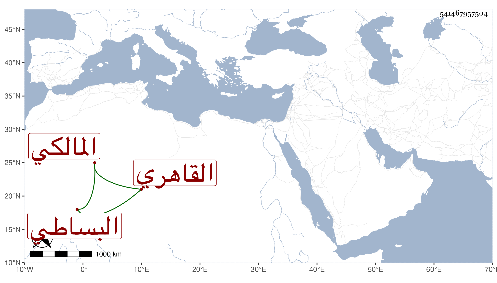

0902Sakhawi.DawLamic.ITO20230111-ara1.EIS1600.541467957504
Biography ID: 541467957504
321
أبو الخير بن البساطي هو خير الدين محمد بن العز عبد العزيز بن الشمس محمد بن أحمد بن عثمان البساطي القاهري المالكي الماضي أبوه وجده . ولد في شوال سنة ثمان وعشرين وثمانمائة وحضر عند جده قليلا وأجاز له خلق واشتغل بالتكسب ولم ينتج ثم قرأ على زوج اخته الزين عبد الرحيم الأبناسي في الفقه وغيره وخالط الفقهاء ولم يتميز نعم ناب في القضاء وورث والده ثم أخته وابتنى دارا بالقرب من حانوت الحنفية داخل باب القنطرة وتزوج في غضون ذلك بزينب ابنة الجلال البلقيني واغتبطت به وحج موسميا ولم يذكر عنه في القضاء إلا الخير .
